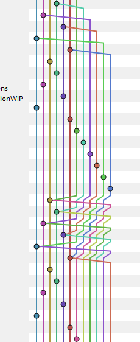

How to get hooked up
Based on Atlassians GIT Hook Guide
Basics
- Scripts that run automatically based on events
- Based on local or server side
- All of you already used hooks
(Gerrit added a unique change-id to track commits acrosses mutliple actions)
Installing hooks
- Inside of every repo
- Remove .sample to make them work
.git/hooks/
applypatch-msg.sample
pre-push.sample
commit-msg.sample
pre-rebase.sample
post-update.sample
prepare-commit-msg.sample
pre-applypatch.sample
update.sample
pre-commit.sample
Example
- Modify any hook or start from scratch
- Scripts have to be executable
- Every script language can be used
- Code will change the message on git commit
#!/bin/sh
echo "# Please include a useful commit message!" > $1
#!/usr/bin/env python
import sys, os
commit_msg_filepath = sys.argv[1]
with open(commit_msg_filepath, 'w') as f:
f.write("# Please include a useful commit message!")
Scope of Hooks
- Local for every repo
- Not copied by git clone
- Alternative: Use Git's template directory (used with every init or clone)
- These templates can versioned and shared easily
Server-side Hooks
- Works like the local ones
- pre-receive: executed, if somebody uses git push
- update: called separately for each pushed ref
- post-receive: after a successful push operation
Example: Linting
Create a pre-commit script and make it executable:
#!/bin/bash
echo "Running some linter..."
lein cljfmt check
status=$?
if [ "$status" = 0 ] ; then
echo "Some pretty code you got there!"
exit 0
else
read -n 1 -p "Oh..this looks bad. Can I fix it? (y/n)? " ret
if [ "$ret" = "y" ]; then lein cljfmt fix; exit 0; fi
exit 1
fi
Example: Unit Tests
Create a pre-push script and make it executable:
#!/bin/bash
echo "Running unit tests..."
lein midje
status=$?
if [ "$status" = 0 ] ; then
echo "Damn..you're good!."
exit 0
else
echo 1>&2 "OMFG, what have you done?"
exit 1
fi
Using GIT as proposal for Guitar Hero
